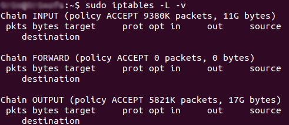

La deuxième mesure que nous devons mettre en place est un ensemble de règles sur chaque serveur pour filtrer les paquets entrants et sortants de nos différentes machines.
Le noyau de Linux intègre des fonctionnalités de pare feu réseau appelés Netfilter.
Netfilter permet de gérer les paquets IPV4, IPV6, ARP et les trames Ethernet.
Pour nos besoins de filtrage des paquets IPV4 nous allons utiliser l'outils iptables pour créer nos différentes règles.
Nous allons mettre en place un pare feu restreignant tous les accès réseau entrants venant de l'extérieur de la machine.
iptables vous permet d'afficher les règles présentent sur votre système. Pour afficher ces règles il vous suffit de taper (en root)
iptables -L
Vous verrez alors apparaître 3 "chaînes" qui sont configurée par défaut dans votre système.
INPUT : toutes les connexions entrantes sur votre système.FORWARD : toutes les connexions entrantes qui transitent par votre système pour une autre machine (par exemple dans le cas d'un routeur Linux qui passe les trames d'une carte eth0 à une carte eth1.OUTPUT : toutes les trames qui sortent de votre système.Commencez par lancer un ping continu avec cmd de windows (ping -t VOTRE_IP_LINUX)
Nous allons maintenant créer une règle qui và bloquer tous les paquets entrants de la machine Linux
iptables --policy INPUT DROP
iptables --policy FORWARD DROP
iptables --policy OUTPUT DROP
Vous devriez normalement voir le ping lancé depuis votre windows s'arrêter.
Nous allons maintenant créer une règle pour autoriser UNIQUEMENT votre PC Windows à se connecter (ou pinguer) votre machine Linux.
iptables -A INPUT -s VOTRE_IP_WINDOWS -j ACCEPT
Le problème ICI est que l'on accepte les connections mais les sorties sont refusées.
Nous allons autoriser toutes les sorties pour votre machine windows
iptables -A OUTPUT -d VOTRE_IP_WINDOWS -j ACCEPT
Si vous voulez supprimer toutes les règles que vous avez créé (à l'exception de la POLICY) vous pouvez faire iptables -F -X
Nous devons maintenant nous assurer que les connexions persistantes (TCP) persistent
iptables -A INPUT -m state --state RELATED,ESTABLISHED -j ACCEPT
iptables -A OUTPUT -m state --state RELATED,ESTABLISHED -j ACCEPT
Pour faire croire que votre machine est éteinte vous pouvez bloquer les ping ICMP
iptables -t filter -A INPUT -p icmp -j DROP
La console iptables -L vous permet de voir le statut de votre firewall. iptables lit les règles du haut vers le bas et s'arrête à la première occurence correspondant à une règle valide.
L'idéal pour un serveur est de n'autoriser en entrant et en sortie que les ports qui sont nécessaires.
Par exemple dans le cadre d'un serveur web ne seront autorisés que les ports 80, 443 et 53
iptables -A OUTPUT -p tcp --dport 53 -j ACCEPT
iptables -A OUTPUT -p udp --dport 53 -j ACCEPT
iptables -A INPUT -p tcp --dport 53 -j ACCEPT
iptables -A INPUT -p udp --dport 53 -j ACCEPT
Faites la même chose pour les ports 80 et 443.
Flusher vos règles (-F -X) et n'autoriser le port 80 qu'a une machine et les ports 443 et 53 à tout le monde.
Pour faire nos règles nous avons flusher à chaque fois iptables pour recréer l'ensemble des règles.
Heureusement pendant vos tests vous pouvez supprimer des règles à la volée.
Pour supprimer une règle il suffit de taper
iptables -D INPUT 1
-D : indicateur de suppressionINPUT : la chaîne1 : la ligne dans iptables -L pour la chaine désiréePour faire persister nos règles au démarrage, il va falloir créer un script BASH et le mettre au démarrage.
Un script BASH est un script qui va executer des commandes dans l'ordre désiré.
#!/bin/bash
echo "Demarrage du Firewall"
iptables --policy INPUT DROP
.....
echo "Firewall Demarre"
Un script doit avoir le flag executable pour pouvoir se lancer.
chmod +x monscript.sh
Pour lancer un script il suffit de taper
./monscript.sh
Une fois votre script validé, il faut le mettre au démarrage de la machine Debian. Debian lance tous les scripts qui sont présents dans /etc/rcS.d/ au démarrage de la machine.
Pour que votre script se lance au démarrage il faut donc :
mv monscript.sh /etc/rcS.d/S90firewall.sh
chmod +x /etc/rcS.d/S90firewall.sh
Vous pouvez facilement créer un routeur avec Linux et un ordinateur possédant au moins deux cartes réseaux.
Pour commencer il faut dire à votre Linux qu'il a le droit de faire passer les paquets d'une carte réseau à l'autre :
echo 1 > /proc/sys/net/ipv4/ip_forward
A partir de ce moment les paquets d'une cartes passent vers l'autre carte.
Imaginons que eth0 soit la carte connectée à votre réseau local et eth1 la carte connecté au routeur Internet
Nous allons créer le script firewall qui va faire transiter les paquets non destinés à notre réseau local vers la carte connectée à Internet
iptables -F -X
# Autoriser les connexions qui sont déjà établies
iptables -A INPUT -m state --state ESTABLISHED,RELATED -j ACCEPT
iptables -A INPUT -m state --state NEW -i ! eth1 -j ACCEPT
iptables -A FORWARD -i eth1 -o eth0 -m state --state ESTABLISHED,RELATED -j ACCEPT
# Autoriser les connections de l'intérieur vers l'extérieur
iptables -A FORWARD -i eth0 -o eth1 -j ACCEPT
# Faire du NAT pour les connexion de l'intérieur vers l'extérieur
iptables -t nat -A POSTROUTING -o eth1 -j MASQUERADE
# Rejeter toutes les connexions entrantes
iptables -A FORWARD -i eth1 -o eth1 -j REJECT
Avec votre passerelle vous pouvez par exemple rediriger les requêtes de vos utilisateurs directement vers votre proxy squid
iptables -t nat -A PREROUTING -p tcp --dport 80 -j REDIRECT --to 3128
Vous pouvez également faire de la redirection de port sur votre passerelle pour par exemple autoriser les gens de l'extérieur à se connecter :
iptables -t nat -A PREROUTING -i eth1 -p tcp --dport 80 -j DNAT --to-destination 192.168.12.2:80